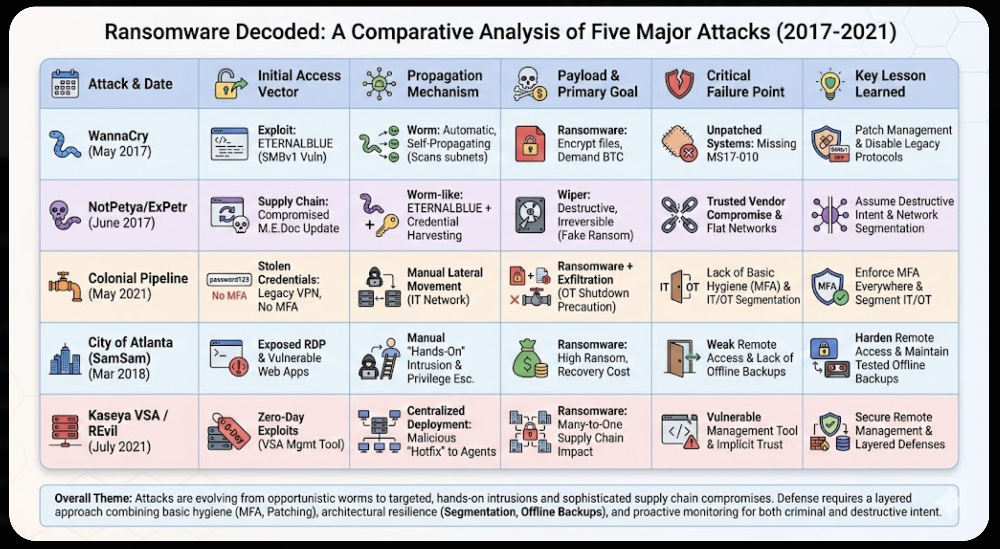

Workshop Overview
This workshop focuses on analyzing major historical ransomware campaigns to understand attacker methodology and design effective defenses. By the end of this session, you will be able to:
- Analyze ransomware campaigns to identify common patterns.
- Map attack steps to the Cyber Kill Chain framework.
- Match security controls (preventative and detective) to specific attack techniques.
- Develop basic incident response plans for ransomware scenarios.
Synthesis: Common Themes across Major Attacks

Lecture Notes: Cross-Cutting Themes
- Identity is the Perimeter: MFA deficiencies were the primary entry point in major incidents like Colonial Pipeline. Stolen credentials remain a top vector.
- Supply Chain Risks: Attacks like NotPetya and Kaseya demonstrated that trusted vendor software updates can be weaponized to bypass perimeter defenses, affecting many victims instantly ("many-to-one").
- Resilience vs. Prevention: Prevention fails. The ability to recover (Resilience) is paramount. This requires verified, offline backups and network segmentation to limit the "blast radius" of an infection.
- IT/OT Convergence Risks: Attacks on corporate IT networks (like billing systems in Colonial Pipeline) often force preemptive shutdowns of Operational Technology (OT) due to a lack of confident segmentation between the environments.
Instructor Resources (Click to Expand)
Answer Keys & Rubrics
Kill Chain Key
Note: Use the on-screen "Show Answer Key" toggle in Lab 1 for visual confirmation.
| Phase | Correct Events |
|---|---|
| Initial Access | Compromised MeDoc update; Exposed RDP/web vulns; Compromised legacy VPN password; VSA zero-day exploit push |
| Execution | Worm-style exploiting SMBv1; Malicious hotfix execution |
| Privilege Escalation | Manual privilege escalation (SamSam) |
| Lateral Movement | Lateral movement via EternalBlue/creds; Manual deployment after RDP access |
| Impact | Acted as a wiper disguised as ransomware; IT network encrypted / OT shut down preemptively |
Controls Effectiveness Key
- Worm/SMBv1: Patching (Stops the exploit root cause).
- Stolen VPN Creds: MFA (Prevents login even with password).
- Malicious Vendor Update: Network Segmentation (Limits blast radius when trusted path is abused; patching doesn't help if the update itself is malicious).
Scenario Response Rubric
Points awarded for including keywords (case-insensitive stems): ["isolate", "disconnect", "preserve logs", "backup", "notify", "forensic", "MFA", "rotate credentials", "segmentation"]
- 3+ keywords: Excellent response.
- 1-2 keywords: Needs improvement, focusing on containment first.
- 0 keywords: Incorrect prioritization.
Discussion Prompts
- If offline backups exist, why do companies still pay ransoms? (Time to recover, data exfiltration leverage).
- How does the legal liability differ between a direct breach and a supply chain compromise like Kaseya?
- Discuss the ethics of the Colonial Pipeline decision to shut down OT systems when only IT was impacted.